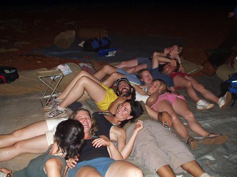
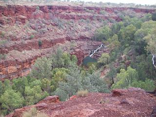
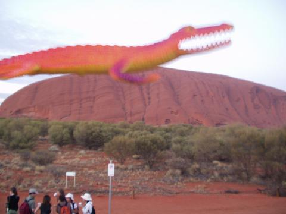
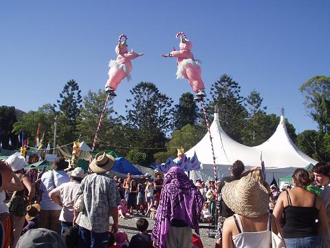

Check out this amazing double-didge we found in a shop in Perth
Aw yeah! Arrived in Sydney mate! Sydney is quite a hectic city (as all major cities are), especially when compared to the beauty and peace of Christchurch, where we arrived from. Still, we managed to catch up with Karen and Anna, two Swedish girls we'd met in New Zealand, and Tim and Leela who we met in Santiago. We also caught up with Elize from Holland, who we originally met with Thys in a hostel in New Orleans. Out of the blue, we bumped into them in a small shop in Zion National Park in the middle of the States, then as we were crossing the road in Buenos Aires a couple of months later, I looked across and there they were. Of course, Auckland showed us no mercy and we met up with them there, and further up in the North Island. So, I don't know who's following who.
The nicest part of Sydney to stroll around is an area called 'The Rocks', and we managed to go to a free street concert there, rounded off with a stroll past the Opera House, where we listened to a busker playing the steel drums and patted the head of a guy busking as a nodding donkey. We took the tube train home - which is the first double decker tube I've seen.
Didn't see as much didgeridoo playing as we'd like, but there was a guy playing techno didge in the street along with a drum machine and amplifiers. We also saw a more traditional concert at the Outback Centre, where we learnt about the ways Aboriginals represent native animals in their music. My favourite was the kangaroo, which is represented with a bouncing sound by saying 'dil dil dil' into the didge - very cute!
We took a trip to Bondi Beach on a lovely hot Sunday, and lazed on the white sand, working on our tans (pretty difficult to achieve through the layers of factor 30 sunscreen - it's like putting on paint!). We were lucky enough to be there for the annual sculpture trail - a series of sculptures and artworks displayed along the coast.
It's a Telephant!!!!!
We decided to head west, as many of the people we have met on our travels have recommended it as the quieter, less discovered side of Australia, so boarded a flight. It actually takes longer to get from Sydney to Perth than it takes to get from NZ to Sydney - just gives you some idea how BIG this country really is! Perth is a much more relaxed city, more easy-going than Sydney. We used it as a base to explore some of the west coast.
We stayed in a laid-back backpackers called 'Rainbow Lodge'. They had some profesional graffitti artists painting a mural outside and wanted people's outlines to include. Hence, we are forever at 'Rainbow Lodge' now, immortalised forever. Can you spot us? (We're facing each other).
The first trip we took was northwards along the coast from Perth to Exmouth. Some highlights:
The tour group going north to Exmouth
>
We stopped at wonderful places like the Pinnacles - thousands of weird rock formations that jut up from the ground like a stone army. The explanation for their presence: trees that once grew in the area somehow all died at the same time. Their root systems decomposed leaving tunnels running underground. These tunnels filled with soil and stuff which became harder than the surrounding ground, which eventually eroded away leaving the sticky up rocks now known as the Pinnacles. Don't ask me how they have worked out that this happened, they're just cleverer than us! The Pinnacles were beautiful at sunset, the colours fading from bright yellow ochres, through to peaches and finally rosy pinks. The only thing to spoil this beautiful moment were the Australian locals - i.e. the flies. Ugh, millions of them, all trying to crawl up noses, into eyes, ears and mouths, apparently after the lovely salt and water combination that we call sweat - nice.
We called in at an animal sanctuary, where people bring injured animals (generally hit by cars). Some of the animals are too injured to return to the wild, so have become quite tame. We fed the kangaroos with little pellets, their soft muzzles pushed up against us to sniff out more food. There were also camels (no-one got spit in the/p eye, fortunately), emu, a hidden saltwater croc, and some snakes to tangle with. We also saw some koalas at a Yanchep National Park, sleeping in the trees by clinging to the branches - so cute, I want to bring one home!
One of the more bizarre places we visited was Hutt River Province. Now, believe it or not, this is actually the second country on the Australian continent. HRP is owned/governed by Prince Leonard, who declared independence from Australia after the government refused to buy the grain he had grown because they already had too much. He wasn't allowed to sell it to anyone else, so he was left with no income that year. So, as every sane person would, he declared independence from Oz, sold his grain to anyone who wanted it and now prints his own money, stamps and is allowed to check passports (incidentally, this is where we discovered that Sam has a Welsh passport - and we all thought he's from Lancashire). Apparently, this is all completely legal, and the UN recognises his country, even though the Oz government do not. Completley bizarre, but all very impressive when you think about it. I think that we might declare our house a separate country, then we can charge people a departure tax when they leave...!
Prince Leonard-King o f Hutt River Province
Very early one morning, we arrived at Monkey Mia (sorry, no monkeys), a small beach which is famous for it's daily visits from a pod of dolphins. Crowds of tourists gather at the water's edge, waiting for a glimpse of a fin, a splash of tail. We were rewarded for our patience as 5 or 6 dolphins came in. This particular family have been visiting the beach there for many, many years, since a lady started feeding them in the 1950's(?).They are still fed today, and Sam was lucky enough to be picked out from the crowd to hand over a fish to one of the waiting dolphins (he always does stand out from the crowd in his Peruvian hat).
Our final stop was Exmouth, from where we went to Turquoise Bay to snorkel on the Ningaloo Reef, which starts only metres away from the edge of the beach. We saw so many amazing, multi-coloured fish, fearlessly swimming past us at breakneck speeds, and peering at our snorkels as if to say 'what kind of fish are you?'. Sam dove down to have close encounters with clams, which closed up surprisingly quickly as he approached, and followed some of the bigger fish around, while I remained on the surface trying to control my panicky breathing. Really amazing, so we were glad that we were not returning to Perth with the tour, but staying on for a few days in Coral Bay. We made excellent use of our time here by snorkelling every morning, then sunbathing, before lounging around for the rest of the afternoon - there was nothing else to do, so it was very relaxing!
We were picked up in Coral Bay by our second tour group, and set off inland towards Karijini National Park. We drove for miles through red desert, without a building in sight, only the low scrub and some distant hills, when suddenly our driver, Glynn, pulled the bus sharply off the road and set off into the desert. He soon came to a stop, with the declaration, 'This is where we camp tonight'. We took a walk to a nearby hill to watch the sun go down with our new friends.
We were in the desert, the outback, with the stars for our roof, the sky for our walls and the red dust as the floor below us. We went for a dark walk amongst the bush, our tourguide picked up a handful of small stones and threw them on the ground. The floor was suddenly transformed into sparks as the crystal rocks released their light with the sudden contact with the floor.

The sleeping arrangements were rather intimate
We watched the blood red sun set from a small hill, before settling in to swags for the night. We counted stars, learnt the names of Sirius, Rigel, Betelguese, Canopus, followed rivers of stars with our eyes, until sleep took us to dream of the time before.
Being instructed how to make 'Damper', the Aussie campfire bread
We spent a few days in the Karijini, exploring some of the gorgeous gorges, swimming in watering holes, climbing up and down steep rocks to get to them. The cool of the water refreshed our over-heated bodies, but the climb back to the top of the gorge quickly undid all the benefits.

In Joffre Gorge, we discovered an Olive Python keeping a low profile in the cool shade of a rock. Unfortunately, he discovered our guide's foot before we discovered him, so two small holes poured forth blood (luckily, olive pythons are constrictors, not venemous).
The GABA, or the Great Australian Bugger-All: it really is nothing, just red earth for hours and hours. There's not even a fence or telegraph wires at the roadside - nothing for as far as you can see. It's really exciting then to see a road train -a truck with up to four carriages and over 50 metres long bombing along from the horizon. Other things of interest are: willy-willy (a small whirlwind that travels along the desert, picking up dust and funneling it high into the sky), the odd kangaroo (got to watch out for them as they can just jump out in front of traffic), and ostriches.
We were tempted to stay at this 'accomodation' at a roadhouse we visited. The owner is trying to branch out into honeymoon suites - I wonder why it's not working??!
Returning to Perth, we couldn't sit still for long and hired a car, along with Darren, a guy we met on tour 1, to experience the wine trail of Margaret River and the lush SouthWest. At the first campsite we stayed at we met Juzzie, a musician who is a demon on the harmonica. We had our own personal show: it was so good, we bought his CD, check out his website.
We had a great road trip, calling in to wineries along the way and enjoying the free samples. We also found the most amazing beach, 'Mandalay Beach'. This was our own personal beach, not another soul for the entire length (over a kilometre), probably not another soul for miles, not even footprints. A test of stamina loomed up later in the form of a 75 metre tree to climb. Helen was up like a monkey - there was no way I was going to have a go - just call me chicken. I wasn't chicken when it came to a tree top walk though. This is a long bridge at the height of the tallest trees and you get a rare glimpse of life at the tree top.
 >
>
It was time to leave Perth for the last time, so we set off in a big military looking 4x4 vehicle called on 'Ocker' or something like that! Our driver for this trip was Geoff - a very laid back kind of guy. As we travelled away from Perth, we noticed that the road was following a large pipeline - this turned out to be the water pipe, carrying fresh water 300+km to Kalgoorlie. It's so far that when the pipe was first opened, the water took 3 and a half weeks to travel the full length. In the meantime, the chief engineer had committed suicide because no-one thought his pipe would work. Crazy! Now, the water arrives in Kalgoorlie at temperatures too hot to drink.
We were to be staying in luxury accommodation again for this trip, i.e. swags! The first night, we unrolled our swags and snuggled in. Soon, an electrical storm was flashing bright streaks of lightning all around, and heavy rain drops started to fall. I pulled my swag up over my head and made myself comfortable. After a while, I poked my head out to see if Sam was dry and snug, only to discover that he was no longer where I'd left him! A brief search found him and the rest of the tour group hiding out in the Ocker, cowering from the storm! What a bunch of wimps!
We visited a ghost town called Gwalia. The town was abandoned in the early 20th century, when it was proposed that the area be mined for gold. However, no mine was dug, so the town remain as it was in the Gold rush days. The buildings are little more than tin sheds, providing small relief from the desert heat. I can't imagine how people would have lived in such conditions, without fridges, air conditioning or any of the other luxuries we take for granted. We couldn't even eat a sandwich before the bread dried out in the heat, so everything must have gone stale in minutes.
The ghost town of Gwalia
From there on, we left paved roads and trundled onto earth roads, which led us through Aboriginal territories. A permit is required to cross these lands, and there are many prohibitions - no alcohol and no petrol allowed (vehicles are run on diesel or aviation fuel). The roads led us to bizarre road houses, and we drove through an Aboriginal community. Mostly, though, we drove through endless red desert and dusty scrub, with nothing as far as the eye could see. The only relief from the monotony was a surprised camel, which jumped out from behind a tree (yes, camels can hide behind trees!). After 3 days of this we finally arrived at Yulara, the resort town which serves Uluru. We headed straight for the pool for a welcome cooling dip!
Before making the pilgramage to Uluru, we went to see Kata Tjuta (The Olgas), a collection of dome shaped rocks that protrude from the desert. We took a short walk through a gorge there, but the heat was almost too much to take.
We finally came to see Uluru. The rock stands majestically in the desert, surrounded by a vast, flat plain, and is as impressive as one expects it to be. We arrived a little before sunset, along with about 40 other tour buses, which did slightly spoil the atmosphere, but as we watched the sun set and the rock change from a rich orange-red to a deeper blood red, then finally to chocolate brown, we were filled with a sense of wonder at the timelessness of the place. Sam played his didgeridoo, and a dingo pup came to see what all the fuss was about. As all the other buses left, a sense of real peace descended, and we were left to contemplate alone.
The next day we got up really early to watch the sun rise at Uluru. It turned out that we were ridiculously early, as you are not supposed to enter the park before 5am, so our guide Geoff got fined - oops! However, it did mean we got the very best spot for viewing, and we got to see the whole sunrise, not just the last bit. The rock changed colour in reverse order from the night before, but it wasn't quite as special as the sunset.
We decided not to climb the rock, well, I wouldn't like anyone to climb over Stonehenge, so we walked the 10kms around the base. What amazed us was there are dreamtime stories all around the base, and the animals are naturally embedded in the rock formed from watercourses and little dents in the rock. So walking around the base is replaying a huge story, it also helped that we had a guidebook explaining the features. It was really quiet and we virtually had the rock to ourselves.
Looking a little weary in the morning, and...can you see the birdwoman in the rock?

We stopped at this roadhouse to meet the famous singing dingo
It was a little dissapointing getting here. I guess we expected an amazing 'Dallas' oasis in the desert, when all we got was 'Bradford' in the Billabong. The highlight was Bojangles, a saloon where you eat stuff and throw the rest on the floor, they have live webcams streaming out so everyone at home can see what a great time you're having and, get this, your mates back home can buy you a round through the internet (damn, we should have been more organised!!!!).
We had to go to a coroboree (an Aboriginal dance performance), it was a bit touristy but we got to drink lots of wine and I (Sam) got the chance to show off my drunken didge skills.
We left the comfort of our hostel 'Annies Place' (recommended) after several days and crossed the desert in comfort-in a plane. At least we thought it would be comfortable, but the desert thermals nearly had me reaching for the puke pack. Anyway, we (amazingly) arrived in Sydney safely and without spatter stains.
We stayed at the 'Pink House' in our favourite part of Sydney-the red light district, how lovely. Actually, it was great, we had an amazing double bed in a dorm room, suspended from the ceiling!
And an electric guitar played Christmas tunes on the PA as they served us a champagne breakfast. We had a secret Santa, and it was like being a kid again-with thirty other kids unwrapping our prezzies in the garden. We had a big meal outside, but in true English tradition, it nearly rained!
Christmas morning, one glass of Champagne and Helen can't keep her head up
Hey hey! What's this? A groovy festival goin' on? Called Woodford? We're there! It was a six day affair out in the countryside near Brisbane. It was a gruelling eighteen hour bus ride on Boxing Day, and more hassle lugging our stuff into the back of yonder, but, what a place! It was a crazy cacophony of madness, music, theatre, workshops and performances and it was great to celebrate the new year with 140 000 others. Here are some photos, we'll write more of this later:
Some festi snippets

There was also a grand fire night, where everything went up in flames
The burning man
This is our treat! We've slogged our way through the lesser explored desert, now lets have some fun on the east coast-regardless that we only have three days left in Australia!
We were just leaving the festival after an exhausting night and seeing the sun rise when a fellow offered us a lift to Byron in his camper. Brilliant! This would save us hours of getting public transport and changing taxis/busses/trains! (or so we thought!)...
His name was Max and told us to wait by his camper while he nipped back into the festival for an hour. Four hours later waiting in the blazing heat he eventually turned up-we were starving but glad to be on the road. Unfortunately, as is common with VW campers, his heating was broken, but, what is uncommon was the fact that it was on full blast and couldn't be turned off! And to make matters worse, all the windows wouldn't open except the drivers. Helen was in the back and melting! It wasn't too bad when we were moving, but being stuck in traffic was a killer. At least we would be by the ocean soon.... Anyway, a few hours later we stopped for petrol and all chipped in, a mile or so down the road, the camper filled the road with smoke and spluttered to a halt. I had a look but couldn't see any problems so we had to wait an hour for the breakdown service. It turned out that 'Mad' Max had put diesel in by mistake. Another hour and a half later and we were being towed to an industrial estate in the dark and in the middle of nowhere-we hadn't eaten since breakfast. We hid behind a large building and slept under the stars with the mosquitos whilst Max slept in the camper. The next day we eventually managed to hitch to Byron Bay but all the hostels were full, luckily we had a tent and could pitch it at the 'Arts Factory', a groovy hostel with tipis and a bus to sleep in, a glorious pool and didgeridoo playing.